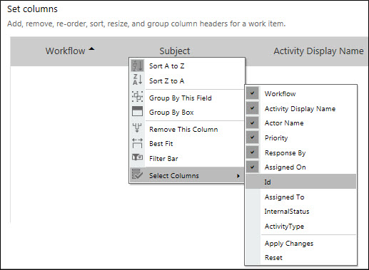

No
You can define have a specific view for a repository so that the defined view appears when you load the work item list control.
You can save a specific layout or global layout by selecting Settings > Global Work Item Layout from the Enterprise Console pull-down menu.
On clicking Global Work Item Layout, the following page will be displayed:
There are two ways to set layouts:
To Save Layout as Global Layout:

There may be a scenario where we want to have different layout specific to different processes.
To Save Layout as Specific Layout:
Skelta.Entity.UserContext uContext = new Skelta.Entity.UserContext();
Skelta.HWS.WorkListChannel.Web.WorkItemListControl.WorkItemControl wi = new Skelta.HWS.WorkListChannel.Web.WorkItemListControl.WorkItemControl();
wi.ApplicationName = uContext.Repository.ApplicationName; //Provide Application or Repository name. This is mandatory.
wi.UserIdString =uContext.LoggedInUserId; //Provide user id string. This is mandatory.
System.Collections.Generic.SortedDictionary<int, string> Qdisplay = new System.Collections.Generic.SortedDictionary<int, string>();
wi.LayoutViewName = "Leave Details View";
//LayoutViewName property is used to load the specified layout.
Note: If the LayoutViewName has not been specified, then the Global Layout created for the repository will be considered as the default layout for the Work Item list control.
Note: If you save the customized layout with the Actor Name column, this column will be displayed in the Work Item List control only for the Queue view. However, this column will not be displayed for the Inbox and Manager views.